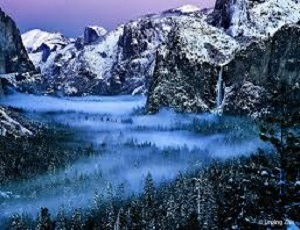
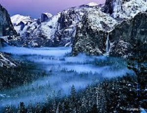

For Reservations, call
209-372-4808
between nine am and nine pm Pacific time
We generally have a three night minimum stay, however we do have some two night stays between our longer stays. Our average stay varies between 3-5 nights. Almost every day we get guests who say they wish they had planned a longer stay, we have yet to have a guest who commented that they wished they had stayed for a shorter time. The longer guests stay, the more they enjoy the park. Yosemite National Park is 1,169 square miles, it compares in size to the state of Rode Island, and is larger than the country of Luxumborg at 998 square miles.
Cancellation Policy
Full payment is required to secure your reservation. Payment is non-refundable, no exceptions. This includes but is not limited to: early departure, change of reservation date, weather, utility outages, ect. We have a small inn and almost all of our vacancies over the past 19 years during our high season have been due to cancelations. All guests must climb 88 stairs to enter the Bed and Breakfast. We recommend purchasing trip cancellation insurance, it is inexpensive and widely available.